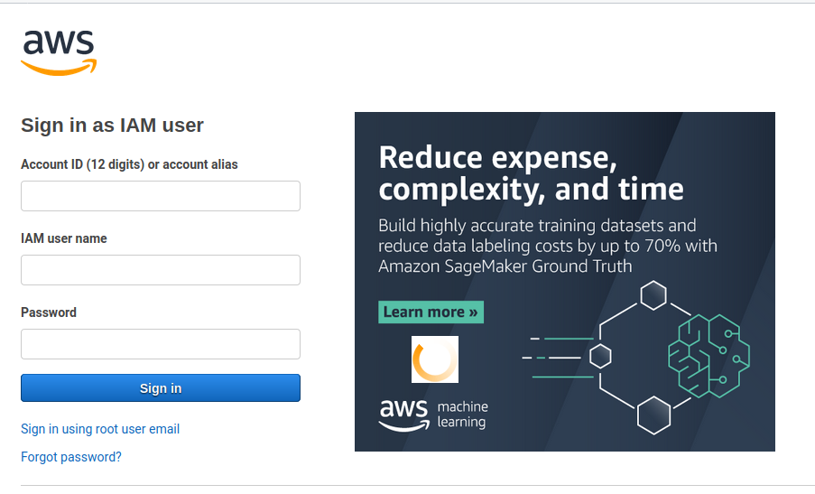
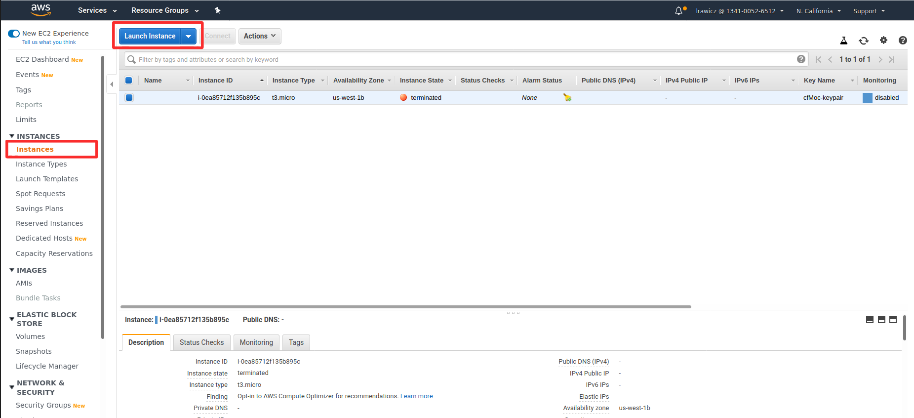
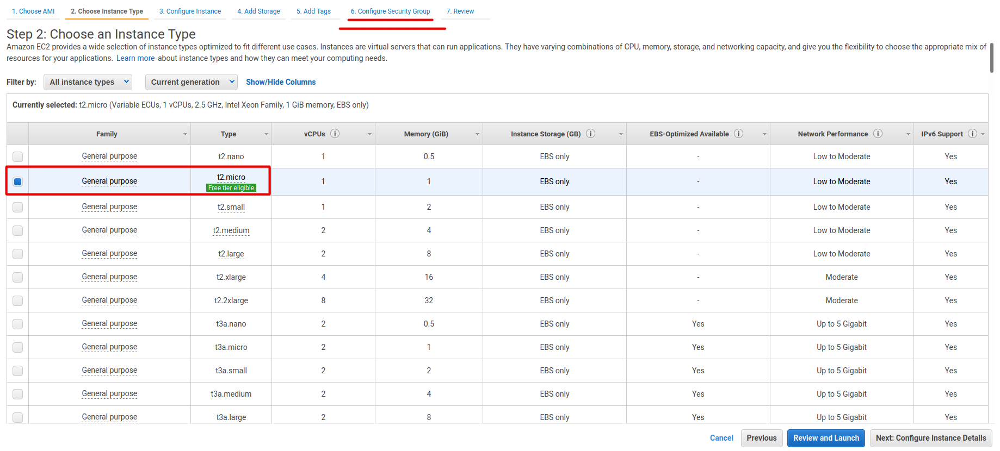

Launch your instant from the AMI
1) Login with your account and go to the EC2 menu.


2) From the EC2 menu go to Instances and press Launch Instance.

3) Now select My AMIs and check "Shared with me" from ownership's menu. After that select the AMI MOC-Oracle.

4) We will use a t2.micro so just go to "6. Configure Security Group"

5) Configure your Security Group
At Security Group press "Add Rule", select "custom RPC" at the type column, in port range enter 5556 and in the source column select Anywhere.
After that press "Review and Launch"

6) Press "Launch"

7) Download KeyPair and launch the instance.
Select "Create a new key pair", put a name for the key and download the file. Now run the instance

8) To connect to your instance follow the instructions from AWS and change "root" for "ubuntu"